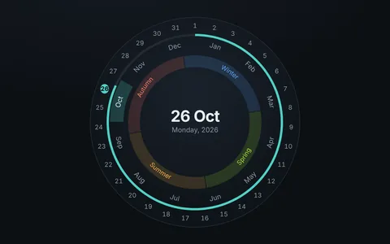
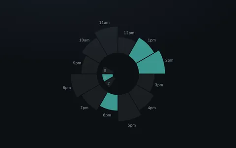

Calendars
Time goes around, so a circle suits it: a year as a dial of months, a day as wedges of hours.

Circular year calendarSeasons, months and days on one dial; step through the year.
Chronodex day plannerA day as wedges; click one to plan that hour.
Chronodex day planner
A Chronodex is a radial day planner from paper journaling: each hour is a wedge, and you fill the wedge to plan that hour. Here every wedge is an <o-arc> you can click.
How it's built
- Twelve
<o-arc>elements without avalueshareorbit-4, 30° each.outer-orbitmakes every wedge start on the ring and grow outward, and its own--o-size-ratiosets how far: 3, 4 or 5 lanes. - The morning is three more arcs on
orbit-1, three lanes long, limited to a quarter withfrom-210 range-90. interactivemakes an arc take clicks;role="button",tabindexandaria-pressedmake it a toggle for the keyboard and screen readers.- The labels are satellites on three rings, one per wedge length, each turned with
from-Nto the middle of its wedges.
Related
- Watches and clocks
- Radial menu demo: arcs that respond to hover and keys
- Arcs